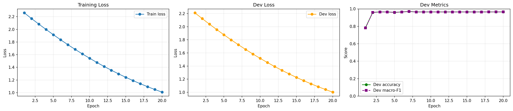

Train Support
Balanced support set used for the few-shot linear probe.
Assignment 1 / Multimodal / Methodology
This page turns the multimodal experiment into a stage-by-stage operating recipe. The pipeline stays fixed above, while the selected process expands into one full-width inspector below with implementation details, code, and method-specific notes.
Assignment 1 / Multimodal / Methodology
Train Support
Balanced support set used for the few-shot linear probe.
Prompt Templates
Prompt ensemble averaged per class in the zero-shot branch.
Test Protocol
Shared held-out split used for the final comparison.
Prompt ensemble
The zero-shot branch tokenizes multiple prompt templates per class, encodes them with the CLIP text tower, then averages the normalized text features to stabilize the class prototype.
Probe optimization
The saved 128-shot run reaches its strongest dev result early, then mostly refines loss without large metric jumps.

Protocol comparison
CLI snapshot
python3 assignments/assignment1/multimodal/models/food101_experiment.py \
--model-id openai/clip-vit-base-patch32 \
--top-k 10 \
--shots-per-class 128 \
--val-per-class 20 \
--epochs 20 \
--learning-rate 1e-3 \
--weight-decay 1e-4